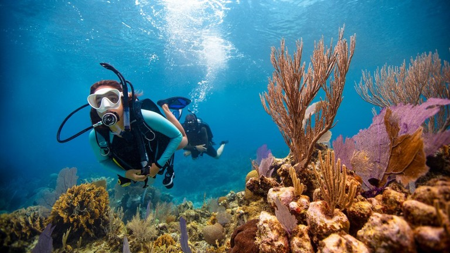
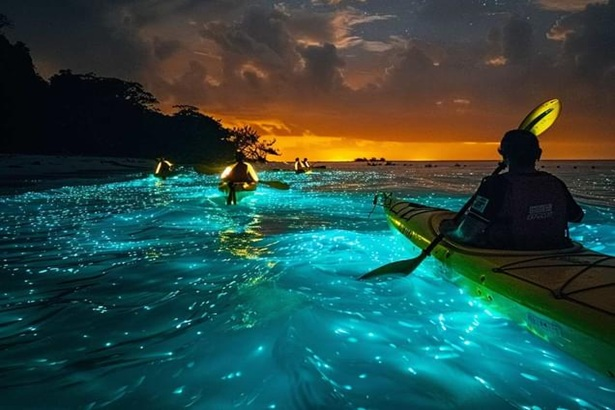
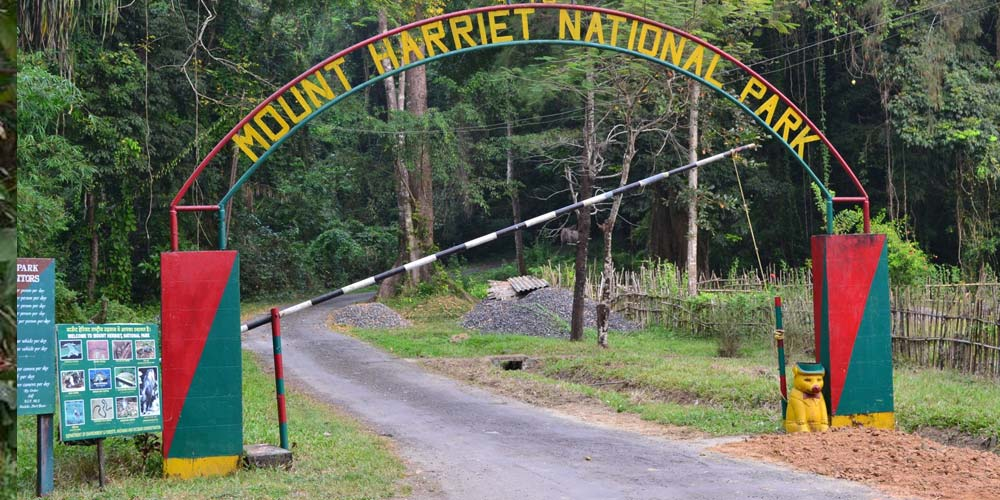
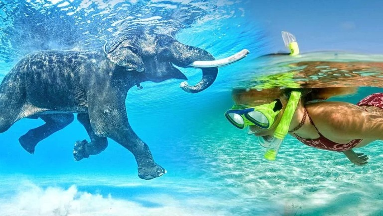

The Remote Outpost of Volcanic Reefs & Deep Oceans
Rising isolated out of the deep waters of the Bay of Bengal, the Andaman archipelago is India's ultimate frontier for wilderness marine exploration. Far removed from the mainland, these islands are ringed by sheer underwater volcanic drops, ancient shipwrecks, and pristine coral barrier systems. Surrounded by massive tropical rainforests that push directly onto empty white coastlines, it offers an untamed playground for true oceanic expeditions.
The Andamans carry an intense "lost world" explorer energy. Away from the entry ports, the atmosphere is quiet, heavy with the sounds of the tropical jungle, and charged with maritime action. It is a space dominated by open water channels—expedition boats loading deep-sea scuba tanks, sea kayakers charting pathless mangrove corridors, and blue-water divers tracking massive marine life along walls that drop hundreds of meters into total ocean darkness.

Plunge down iconic vertical drops at legendary sites like Havelock's Dixon’s Pinnacle. Navigate massive volcanic spires covered in pristine fan corals and look out for manta rays and sea turtles.

Paddle sea kayaks out through Havelock’s dense mangrove channels after midnight. Witness the water explode into glowing neon blue arrays with every stroke of your paddle blade.

Hike rough, uncharted trails slicing directly through dense, canopy-covered tropical rainforest reserves. Track wild endemic species before breaking out onto completely isolated rocky shores.

Swim straight off white sand banks into a shallow, massive coral barrier system. Gliding across perfectly clear turquoise waters, observe vibrant reef life passing over giant brain corals.